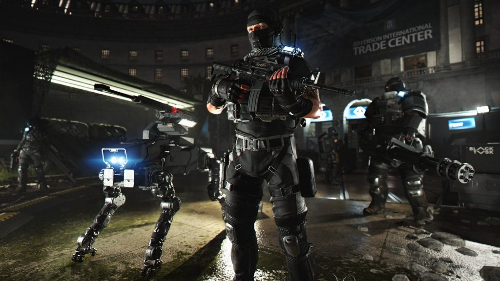

A játékban több különböző bandba lehet ütközni, akik a Hyenas, True Sons és az Outcast, majd idővel egy különleges egység, a Black Tusk is fegyevrt fog a játékos ellen. Rouge Agents, azaz Áruló Ügynökök is meg jelenhetnek, akik el árukták a Divisoint. Huters, Vadászok, iszonyatosan veszélyes ellenfelek, akik valamilyen titkos úton érhetők el. A bandák nincsenek jó viszonyban egymással, ha véletlenül össze találkoznak elkezdenek harcolni egymással.
Black Tusk |
|---|
|  |
Típus |
| Ellenséges frakció |
|  |
| Elhelyezkedés |
|
Tidal Basin Capitol Building Roosevelt Island District Union Arena Washington National Airport Manning National Zoo |
| Vezetők |
|
Alleged Majority Financier Sokolov Concern Known Highest-Up Natalya Sokolova (Founder and CEO) Previous BTSU Higher-Up Unknown Past BTSU Leader Bardon Schaeffer (Apprehended) |
| Célok |
|
A kormány feloszlatása Totalitárius ellenőrzés |
| Egyéb nevezetes tagok |
|
President Ellis
Milla "Wyvern" Radek Ellis Galveston Petrus Brenner Elijah Sumner Jack Bonney Dolores Jones Stan "Chunky" Dawson |
| Rouge ügynökök |
|
Aaron Keener ("Formerly") Marley "Shade" Yarrow Sueko "Wraith" Tanagi Linette "Dusk" Edwards Skyler "Belfry" Williams Faye Lau Bridgette "Viper" Douglas Felix "Kestrel" Sokolov Dustin "Magnus" Xavier Alicia "Circe" Coswald |
A legnehezebb ellenfél az SHD számára. Az Egyesült Államok kormányához kötődő PMC, azaz magán katonai egységeként működő alakulat, ami akkor támadta meg a fővárost, mikor a Kapitólium épületéből kipucolták az Igaz Ifiakat. Visszavették az egykori frakciók bázisait és a missziók helyszíneit. Hiába semmisítette meg az SHD a Tidal Basin fő épületüket, ugyan úgy működnek még DC-ben. A BTSU az SHD nemezise , akiket képtelenek eltűntetni. Egy magasan képzett katonai alakulat nagyon jó minőségű és modern felszereléssel. Magas támogatottság és technikai háttérrel rendelkezik.
A zöld méreg kitörésével a BTSU műveletei fontos stratégiai pontokat foglaltak el az egész ország területén bellül. Katonai bázisok, villamos energia hálózatok, közművek, szerverparkok, pénzügyi intézmények, egyetemek, high tech nagyvállalatok, kutató központok és laborok. Most a szövetségi ellenállás miatt vezényelték őket a fővárosba
Hátterük teljes homály, folytonos félre tájékoztatás veszi őket körül. Azt tudjuk, hogy katonai és félkatonai csoportokból tevődik össze. Tagjaik komoly katonai háttérrel rendelkezik. Már dolgoztak nagyhatalmak leverésén és nemzetek felkelsének leverésén. Hihetetlen hírszerzésük van, már a zöldméreg 0. percében mozgolódtak már, mindenről egy lépéssel hamarabb tudnak.
Vezetésükről semmit nem tudunk. Tagjaik teljesen fedettek és észrevétlenek az ország szerveivel.